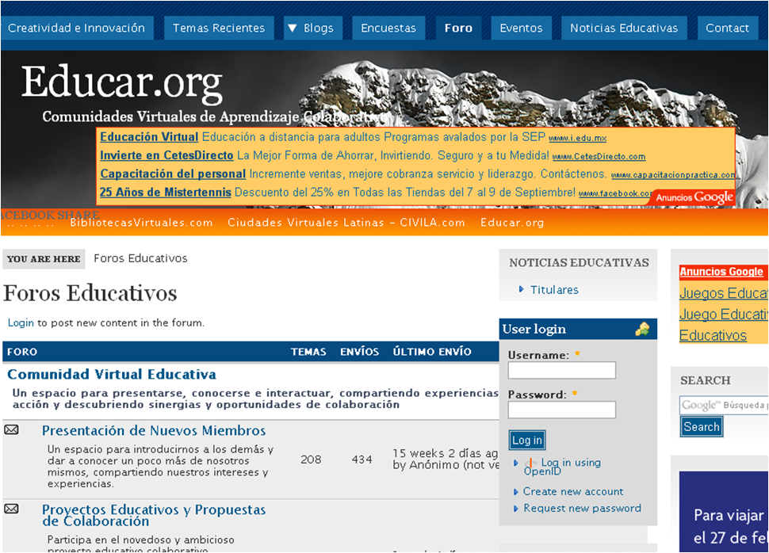
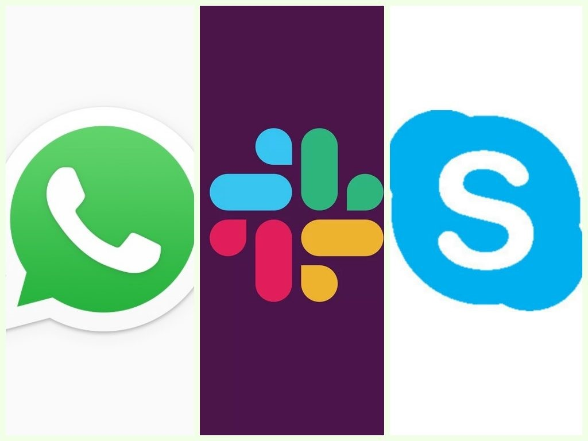

CONCEPTOS | |
NAVEGADOR:Un navegador web es un software, aplicación o programa que permite el acceso a la Web, interpretando la información de distintos tipos de archivos y sitios web para que estos puedan ser vistos. La funcionalidad básica de un navegador web es permitir la visualización de documentos de texto, posiblemente con recursos multimedia incrustados. Además, permite visitar páginas web y hacer actividades en ella, es decir, enlazar un sitio con otro, imprimir, enviar y recibir correo, entre otras funcionalidades más. Los documentos que se muestran en un navegador pueden estar ubicados en la computadora donde está el usuario y también pueden estar en cualquier otro dispositivo conectado en la computadora del usuario o a través de Internet, y que tenga los recursos necesarios para la transmisión de los documentos. Ejemplos: CORREO ELECTRONICO:El correo electrónico (también conocido como e-mail, un término inglés derivado de electronic mail) es un servicio que permite el intercambio de mensajes a través de sistemas de comunicación electrónicos. El concepto se utiliza principalmente para denominar al sistema que brinda este servicio vía Internet mediante el protocolo SMTP (Simple Mail Transfer Protocol), pero también permite nombrar a otros sistemas similares que utilicen distintas tecnologías. Los mensajes de correo electrónico posibilitan el envío, además de texto, de cualquier tipo de documento digital (imágenes, videos, audios, etc.). El funcionamiento del correo electrónico es similar al del correo postal. Ambos permiten enviar y recibir mensajes, que llegan a destino gracias a la existencia de una dirección. El correo electrónico también tiene sus propios buzones: son los servidores que guardan temporalmente los mensajes hasta que el destinatario los revisa. Ejemplos: WEB:Sistema de gestión de información más popular para la trasmisión de datos a través de internet. La web es el diminutivo de world wide web o www cuyas tecnologías para su funcionamiento (HTML, URL, HTTP) fueron desarrolladas en el año 1990 por Tim Berners Lee. Para usar la web es necesario tener acceso a internet y un navegador web, por la cual se solicita una página dinámica llamada también página web. La web usa para la creación de sus páginas web el lenguaje HTML (hypertext markup language) que unificó la forma de buscar y crear información a través de internet. El conjunto de páginas web asociadas se sitúan en un sitio web como lo es, por ejemplo, Youtube. Ejemplos: BUSCADORES:Es un sistema informático que busca archivos almacenados en servidores web gracias a su araña web.1 Un ejemplo son los buscadores de Internet (algunos buscan únicamente en la web, pero otros lo hacen además en noticias, servicios como Gopher, FTP, etc.) cuando se pide información sobre algún tema. Las búsquedas se hacen con palabras clave o con árboles jerárquicos por temas; el resultado de la búsqueda «Página de resultados del buscador» es un listado de direcciones web en los que se mencionan temas relacionados con las palabras clave buscadas. Como operan de forma automática, los motores de búsqueda contienen generalmente más información que los directorios web. Sin embargo, estos últimos también han de construirse a partir de búsquedas (no automatizadas) o bien a partir de avisos dados por los creadores de páginas. Ejemplos: FORO es un centro de discusión acerca de un tema en particular, que concentra opiniones de muchas personas de distintos lugares, en forma asincrónica. Esto último significa que la comunicación entre las personas se da sin necesidad de que éstas se encuentren usando la plataforma de manera simultánea. Cada persona que se conecte, independientemente del momento, tendrá acceso a los mensajes que queden registrados en la temática del objeto de discusión. La participación en un Foro de Discusión Virtual permite compartir reflexiones, búsquedas y hallazgos, así como solucionar problemas mediante las respuestas a las preguntas generadoras de discusión. Ejemplos: TELECONFERENCIAS: Es una tecnología que permite el intercambio directo de información entre varias personas y máquinas a distancia a través de un sistema de telecomunicaciones. Términos tales como conferencias de audio, conferencia telefónica, también se utilizan a veces para referirse a las teleconferencias. Este sistema permite el intercambio de audio, vídeo o servicios de transmisión de datos, como la telefonía, telegrafía, teletipos, radio y televisión. Se le llama teleconferencia o videoconferencia a aquella conversación que sucede a través de teléfonos con video, webcams u otros dispositivos a distancia. Existen distintas formas de llevar a cabo una teleconferencia, pero en todos los casos hay un propósito de sortear una distancia en la comunicación, ahorrando tiempo y dinero y permitiendo las mismas comodidades y beneficios que una comunicación cara a cara. También se habla de teleconferencia cuando, independientemente de la inclusión de imágenes de video, hay más de dos participantes conectados en la misma conversación. Ejemplo: VIDEOCONFERENCIAS:Es la comunicación simultánea bidireccional de audio y vídeo, que permite mantener reuniones con grupos de personas situadas en lugares alejados entre sí. Adicionalmente, pueden ofrecerse facilidades telemáticas o de otro tipo como el intercambio de gráficos, imágenes fijas, transmisión de archivos desde el computador, etc. Es un sistema interactivo que permite a varios usuarios mantener una conversación virtual por medio de la transmisión en tiempo real de video, sonido y texto a través de internet. Ejemplos: |
Menu |